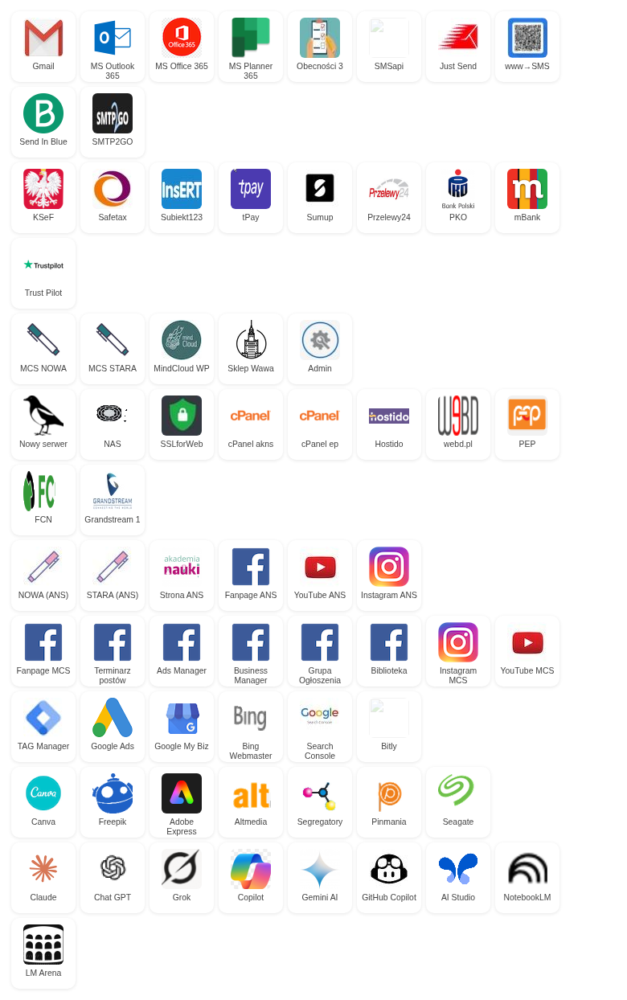

Prywatna tablica skrótów do aplikacji webowych — dokumentacja
Galaktyka to prywatna, lokalna tablica kafelków (launcher) do aplikacji i serwisów webowych. Działa jako strona startowa w przeglądarce — zamiast zapamiętywać adresy, masz wszystkie ważne usługi (banki, narzędzia AI, social media, panele administracyjne) zebrane w jednym miejscu jako klikalne kafelki.
Program jest zainstalowany na lokalnym serwerze (PHP + Apache) i dostępny z dowolnej przeglądarki
w sieci lokalnej pod adresem http://<adres-serwera>/galaktyka/.

Kafelki pogrupowane tematycznie w rzędach: e-mail, finanse, serwery, social media, AI.
Kliknięcie kafelka otwiera serwis w nowej karcie. Najechanie pokazuje pełny URL.
Dodawanie, edycja i usuwanie kafelków przez przeglądarkę — bez edycji plików.
Upload własnych ikon PNG dla każdego kafelka wprost z panelu administracyjnego.
Kafelki można przeciągać i przestawiać w dowolne miejsce w siatce.
Przycisk Undo w panelu przywraca poprzedni układ kafelków.
Panel admina dostępny jest przez kafelek Admin lub bezpośrednio pod adresem /galaktyka/admin.php.
data/admin.config.index.php — widok główny, renderuje siatkę kafelkówadmin.php — panel administracyjny (wymaga logowania)data/kafelki.config — lista wszystkich kafelków (id, nazwa, ikona, URL)data/menu.config — układ siatki (który kafelek jest w którym rzędzie i kolumnie)data/settings.config — ustawienia (liczba kolumn)data/admin.config — dane logowania admina (nie trafia do repozytorium!)data/ftp.config — dane FTP do aktualizacji (nie trafia do repozytorium!)data/icons/ — ikony PNG kafelkówdocs/ — ta dokumentacja/var/www/html/galaktyka/).bash setup.sh — utworzy pliki .config z przykładowych szablonów.data/admin.config — zmień login i hasło admina.data/kafelki.config — dodaj własne kafelki (lub użyj panelu admin).data/menu.config — ustaw kolejność wyświetlania kafelków.http://<serwer>/galaktyka/ w przeglądarce.README.TXT w katalogu głównym projektu.